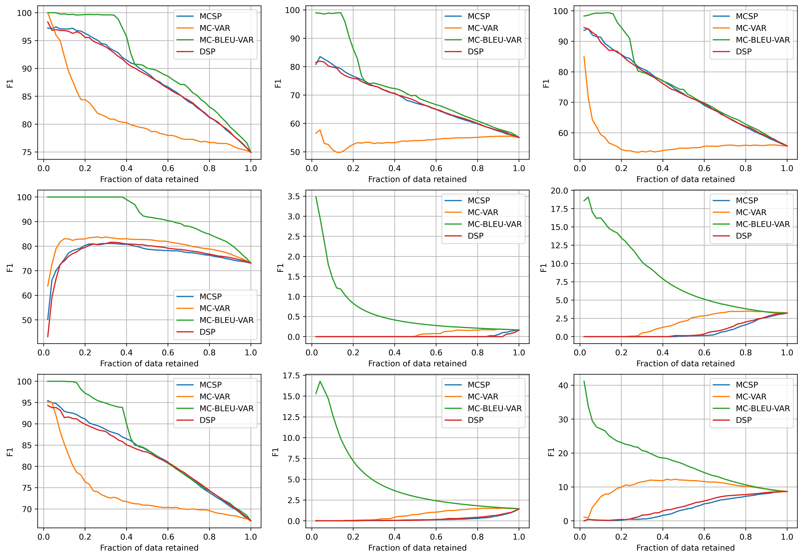

Tim Xiao
Exploiting Semi-Supervised Generative Model in Active Learning
My second master project. Active learning tries to solve a practical problem for machine learning, which is to create a good model with only limited labelling budget. In this project, we exploit useful properties from semi-supervised generative model and use them in active learning. Our experiments in the half-moon and MNIST dataset show that by using semi-supervised generative model with simple acquisition function such as predictive entropy, we are able to improve the performance of active learning. Further experiments on our proposed acquisition functions expose interesting challenges in using data density provided by the model, which can be a valuable pointer for future active learning research.
Tim Z. Xiao, David Barber
Keywords: Machine Learning, Active Learning, Generative Model, Semi-Supervised Model, VAE

[ Paper ]Data Efficient Multilingual Question Answering
I am an advisor for this project. Data scarcity is a major barrier for multilingual question answering: current systems work well with languages such as English where data is affluent, but face challenges with small corpora. As data labelling is expensive, previous works have resorted to pre-tuning systems on larger multilingual corpora followed by fine-tuning on the smaller ones. Instead of curating and labelling large corpora, we demonstrate a data efficient multi-lingual question answering system which only selects uncertain questions for labelling, reducing labelling efforts and costs. To realise this Bayesian active learning framework, we develop methodology to quantify uncertainty in several state-of-art attention-based Transfer question answering models. We then propose an uncertainty measure based on the variance of BLEU scores, and computed via Monte Carlo Dropout, to detect out-of-distribution questions. We finish by showing the effectiveness of our uncertainty measures in various out-of-distribution question answering settings.
Zhihao Lyu, Danier Duolikun, Bowei Dai, Yuan Yao, Pasquale Minervini, Tim Z. Xiao and Yarin Gal
Workshop on Uncertainty & Robustness in Deep Learning, ICML 2020
Keywords: Machine Learning, Bayesian Deep Learning, Uncertainty, NMT, Out-of-Distribution, Question Answering
Detecting Out-of-Distribution Translations with Variational Transformers
My master project. In the project, we detect out-of-training-distribution sentences in Neural Machine Translation using the Bayesian Deep Learning equivalent of Transformer models. For this we develop a new measure of uncertainty designed specifically for long sequences of discrete random variables -- i.e. words in the output sentence. Our new measure of uncertainty solves a major intractability in the naive application of existing approaches on long sentences. We use our new measure on a Transformer model trained with dropout approximate inference. On the task of German-English translation using WMT13 and Europarl, we show that with dropout uncertainty our measure is able to identify when Dutch source sentences, sentences which use the same word types as German, are given to the model instead of German.
Tim Z. Xiao, Aidan Gomez, Yarin Gal
Spotlight talk, Workshop on Bayesian Deep Learning, NeurIPS 2019
Keywords: Machine Learning, Bayesian Deep Learning, Uncertainty, NMT, Out-of-Distribution

Facial Expression Modifier
My undergraduate final year project. It is a facial expression modifier that takes a face image and generates images with seven facial expressions while keeping the identity of the input subject unchanged. The algorithm behind is based on a novel deep learning method called Generative Adversarial Networks (GANs).
Keywords: Machine Learning, GANs, Facial Expression, TensorFlow, Python

A Simple Particle System
One of my coursework project. A particle system that simulates an asteroid hitting the earth. The simulator can be reconfigured in the url to have different number of particles. Change of time, gravity and velocity is also allowed using the control panel. The project utilises WebGL and Three.js.
Keywords: WebGL, Three.js, Particle System